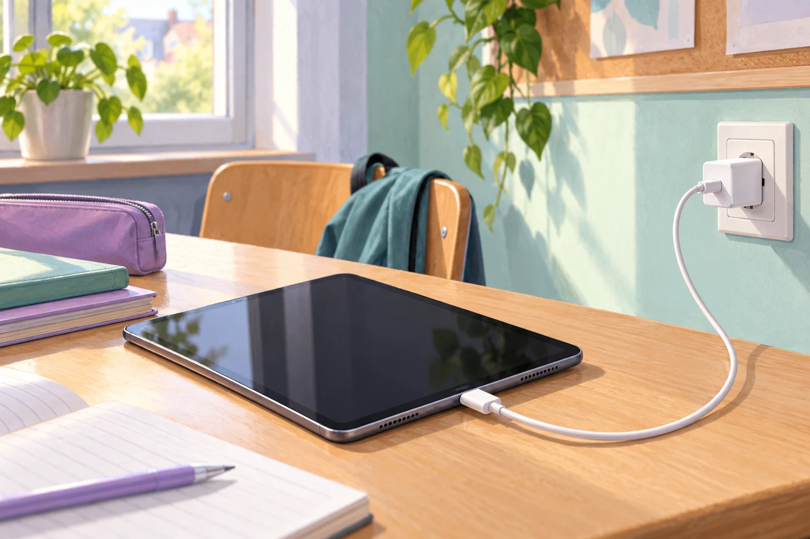

Ein Tablet wird an fünf Schultagen jeweils 90 Minuten lang geladen. Wie viel elektrische Energie nimmt sein Ladegerät dabei insgesamt ungefähr aus der Steckdose auf?

Fermi-Aufgabe 15 · Klasse 9/10
Ein Tablet wird an fünf Schultagen jeweils 90 Minuten lang geladen. Wie viel elektrische Energie nimmt sein Ladegerät dabei insgesamt ungefähr aus der Steckdose auf?

Findet eine mögliche Antwort und entwickelt dazu euren eigenen Lösungsweg.